ВЕДОМСТВЕННЫЕ СТРОИТЕЛЬНЫЕ НОРМЫ
МЕЛИОРАТИВНЫЕ
СИСТЕМЫ
И СООРУЖЕНИЯ
СООРУЖЕНИЯ НА НАБУХАЮЩИХ ГРУНТАХ
НОРМЫ ПРОЕКТИРОВАНИЯ
ВСН 33-2.2.07-86
МИНИСТЕРСТВО
МЕЛИОРАЦИИ И ВОДНОГО
ХОЗЯЙСТВА СССР
МОСКВА 1986
РАЗРАБОТАНЫ Союзгипроводхозом (к.т.н. С.С. Савватеев - руководитель темы, к.т.н. А.Л. Мариупольский, к.г.-м.н. Г.Д. Патрашков, В.П. Суровцев-Бутов); Союзводпроектом (Н.И. Пупышев); ВНИИГиМом (к.т.н. А.В. Колманов, к.т.н. А.С. Сызранов)
ВНЕСЕНЫ Союзводпроектом
ПОДГОТОВЛЕНЫ К УТВЕРЖДЕНИЮ Главным техническим управлением Минводхоза СССР (С.А. Савченко)
С введением в действие ВСН 33-2.2.07-86 "Мелиоративные системы и сооружения. Сооружения на набухающих грунтах. Нормы проектирования" утрачивает силу ВСН II-21-78 "Инструкция по проектированию оросительных систем для районов с набухающими грунтами".
|
Министерство мелиорации и водного хозяйства СССР (Минводхоз СССР) |
Ведомственные строительные нормы |
ВСН 33-2.2.07-86 |
|
Мелиоративные системы и сооружения. Сооружения на набухающих грунтах. Нормы проектирования |
Взамен |
Настоящие ВСН устанавливают требования к проектированию сооружений оросительных систем на набухающих грунтах, и не распространяются на мелиоративные системы на грунтах, набухающих за счет новообразований, образующихся в грунте при взаимодействии его с растворами агрессивных веществ (химическое набухание), или за счет кристаллизации сернокислых соединений.
1. Основные положения
1.1. При проектировании оросительных систем и их сооружений обязательно соблюдение требований СНиП 2.02.01-83*, СНиП 2.06.03-85, СНиП 2.02.02-85, СНиП 2.06.01-86, СНиП 2.06.03-85, СНиП II-55-79, СНиП II-56-77.
1.2. При проектировании оросительных систем должна быть обеспечена их наибольшая эффективность, достигаемая при оптимальной надежности. Надежность комплекса гидротехнических сооружений оросительной системы (ГТС ОС) характеризуется коэффициентом сохранения эффективности согласно ГОСТ 27.002-83. Оптимальным уровнем надежности комплекса ГТС ОС является такой уровень, при котором достигается их наибольшая эффективность или (эквивалентно) минимум совокупных народно-хозяйственных затрат, включающих капиталовложения на строительство, эксплуатационные издержки; и сельскохозяйственные ущербы, возникающие вследствие повреждений ГТС ОС при набухании грунтов.
|
Внесены В/О "Союзводпроект" |
Утверждены приказом Министерства мелиорации и водного хозяйства СССР от "19" ноября 1986 г. № 413 |
Срок введения в действие "15" мая 1987 г. |
1.3. Настоящие "Нормы" распространяются на проектирование и строительство оросительных систем и гидротехнических сооружений на набухающих грунтах, которые при замачивании жидкостью увеличиваются в объеме, и при этом относительное набухание в условиях свободного набухания (без нагрузки) более 0,04. Следует учитывать, что набухающие грунты при уменьшении влажности уменьшают свой объем (усадка).
1.4. Проектирование, и строительство сооружений оросительных систем на набухающих грунтах в сейсмических районах должно осуществляться с учетом требований главы СНиП II-7-81.
1.5. При проектировании оросительных систем и сооружений следует руководствоваться следующей классификацией набухающих грунтов:
Таблица 1
|
свободное относительное набухание |
||
|
в одометрах |
в приборах ПНГ |
|
|
Ненабухающие |
менее 0,04 |
менее 0,07 |
|
Слабонабухающие |
0,04-0,08 |
0,07-0,13 |
|
Средненабухающие |
0,08-0,12 |
0,13-0,20 |
|
Сильнонабухающие |
более 0,12 |
более 0,20 |
1.6. При проектировании сооружений необходимо учитывать дополнительные воздействия на них от набухания замачиваемого грунта, а также зависимость степени набухания грунтов при увлажнении от величин вертикального давления и начальной плотности и влажности грунта (см. обязательное приложение 2).
1.10. Конструктивные мероприятия должны предусматривать применение гибких конструкций сооружений, состоящих из элементов повышенной прочности, разделенных деформационными швами.
1.11. В проектах сооружений I-III классов должна быть предусмотрена организация наблюдений за их перемещениями и деформациями (осадками, подъемами) и состоянием конструкций.
1.12. При проектировании заглубленных сооружений необходимо учитывать изменения горизонтального давления на сооружения и облицовки каналов при набухании и усадке грунтов.
1.13. Расчет ожидаемых деформаций оснований следует вести на основе результатов инженерно-геологических изысканий в районе строительства с учетом режима замачивания и подсыхания грунта и воздействий на грунт со стороны возводимого сооружения.
1.14. На предварительных стадиях проектирования (ТЭО, схема), при отсутствии лабораторных данных по набуханию, характеристики набухающих грунтов следует определять по следующим формулам:
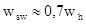
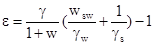
Обозначения здесь и далее согласно справочному приложению 1.
1.15. На стадиях проекта, рабочего проекта и рабочей документации лабораторные определения характеристик набухающих грунтов следует выполнять в соответствии с ВСН 33-2.2.07-86, с учетом возможных изменений свойств набухающих грунтов при изменении их влажности. Состав дополнительных лабораторных исследований набухающих грунтов естественного сложения для различных условий работы в основании сооружений оросительных систем и при использовании этих грунтов в качестве строительных материалов, и в обратных засыпках, следует назначать в соответствии с обязательным приложением 2.
1.16. Расчетные значения характеристик набухающих грунтов следует назначать с учетом изменения их свойств при набухании. При расчете по первой группе предельных состояний расчетное сцепление и угол внутреннего трения грунтов следует принимать на основании статистическое обработки, при доверительной вероятности 0,95, при коэффициенте надежности по грунту gg = 1. При расчете по второй группе предельных состояний расчетные значения принимаются равными нормативным.
1.17. При изысканиях на площадях для сооружений I и П классов на средне- и сильнонабухающих грунтах, кроме лабораторных исследований грунтов, должны проводиться также полевые испытания грунтов штампами при замачивании.
1.18. Использовать набухающие грунты в качестве строительных материалов следует только при соответствующем обосновании.
1.19. При проектировании ГТС на набухающих грунтах должны выполняться оценка изменения режима влажности грунта, вызванного строительством оросительной системы, прогноз набухания и изменения физико-механических характеристик грунтов в основании сооружений, в откосах каналов и естественных склонов долин, берегов водохранилищ, следует учитывать объекты-аналоги в подобных инженерно-геологических условиях.
2. Расчет оснований гидротехнических сооружений.
Общие указания
2.1. Статистические расчеты оснований гидротехнических сооружений, сложенных набухающими грунтами должны производиться:
по первой группе предельных состояний - по несущей способности грунтов основания (согласно указаниям СНиП 2.02.01-83, СНиП 2.02.02-85),
по второй группе предельных состояний - по предельным деформациям, с целью ограничения их величинами, обеспечивающими нормальную эксплуатацию возводимых сооружений. Расчет по деформациям является обязательным и сводится к проверке условия
(3)
где S - расчетная деформация основания;
Sи - предельная деформация основания сооружения, определяемая согласно обязательному приложению 3.
2.2. При расчетах деформаций сооружений и оснований, сложенных набухающими грунтами, должны учитываться:
- вертикальный подъем hsw и усадка Ssh при увлажнении - высыхании набухающих грунтов;
-
остаточный подъем 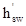
2.3. Нагрузки и воздействия на основания, передаваемые сооружениями, а также воздействия, передаваемые на сооружение набухающим грунтом основания и обратных засыпок, должны устанавливаться для системы "сооружение - основание". В дополнение к нагрузкам и воздействиям, принимаемым согласно требованиям СНиП 2.01.07-85, при строительстве на набухающих основаниях следует учитывать воздействие вертикальных нормальных и касательных сил набухания грунтов Psw, Fsl, а также горизонтальных сил набухания Pseq.
Нагрузки от действия сил набухания должны включаться в основное сочетание нагрузок, и при расчетах по несущей способности их следует считать кратковременными, а при расчете по деформациям - длительными.
2.4. Если глубина заложения фундамента (сооружения) d больше, чем толщина зоны набухания Нsw, то в расчете подъема сооружения следует учитывать только касательные силы подъема (по боковой поверхности сооружения в пределах слоя набухания), если d < Нsw, то следует учитывать совместное воздействие касательных сил подъема и вертикальных сил набухания (по подошве сооружения), направленных вверх, а при расчете прочности - также воздействие горизонтальных сил набухания грунта.
2.5. При наличии в основании сооружения специальной подготовки из: крупнозернистого песка, песчано-гравийной смеси, щебня или тощего бетона, за величину d следует принимать расстояние, измеряемое по вертикали, от дневной или планировочной поверхности (дна канала или котлована) до низа слоя подготовки.
2.6. Нижняя граница зоны набухания Нsw должна определяться с учетом особенностей и продолжительности увлажнения оснований гидротехнических сооружений оросительных систем:
а) при постоянных, регулярно повторяющихся и длительных потерях воды на фильтрацию за нижнюю границу Нsw следует принимать глубину, где суммарное вертикальное напряжение szt (п. 2.13) равно давлению набухания Psw;
б) при кратковременных и аварийных потерях воды на фильтрацию глубину Нsw следует определять расчетам согласно рекомендуемому приложению 4.
2.7. Подъем сооружений при действии на него касательных сил подъёма следует учитывать при выполнении условия
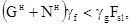
где Gн - вес сооружения;
Nн - сила, удерживающая сооружение от подъема вследствие трения его боковой поверхности о ненабухающий грунт;
Fн - равнодействующая сил подъема, действующих по боковой поверхности сооружения, определяемая по п. 2.9;
gf - коэффициент надежности по нагрузке, принимаемый 0,9;
gg - коэффициент надежности по грунту, принимаемый 1,1.
Примечание: расчет подъема свайных фундаментов следует выполнять согласно указаниям СНиП 2.02.03-85.
2.8. Силу Nн, удерживающую сооружение от подъема, следует определять по формуле
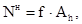
где f - удельное сопротивление сдвигу ненабухающего грунта по боковой поверхности сооружения; значение допускается принимать для грунтов обратных засыпок равным 30 кПа для песчаных грунтов и 20 кПа для глинистых грунтов; для свайных фундаментов в соответствии со СНиП 2.02.03-85;
Ah - площадь боковой поверхности сооружения, находящейся ниже слоя набухающего грунта.
2.9. Сила подъема сооружения Fsl должна определяться по результатам полевых испытаний, или по СНиП 2.02.03-85 или по формуле
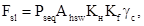
где Pseq - горизонтальное давление набухания;
Ahsw - площадь боковой поверхности сооружения в пределах слоя набухающего грунта;
gc - коэффициент условий работы, gc = 0,85;
Kf - коэффициент трения грунта по боковой поверхности сооружения;
Kн - коэффициент, зависящий от интенсивности набухания грунта, принимаемый по табл. 2.
Таблица 2
|
Слабонабухающие |
Средненабухающие |
Сильнонабухающие |
|
|
Коэффициент Kн |
1,3 |
1,1 |
1,02 |
2.10. Подъем сооружений при совместном действии на него касательных сил подъема и давления набухания под подошвой, следует учитывать при выполнении условия
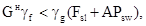
где A - площадь подошвы сооружения, м2.
2.11. Подъем под действием касательных и вертикальных сил набухания следует определять по формуле:
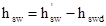
где hswd - набухание грунта в пределах глубины заложения сооружения d;
- подъем поверхности ненагруженного набухающего грунта.
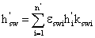
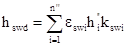
eswi - относительное набухание грунта i-го слоя;
n¢, n¢¢ - число слоев грунта с различными характеристиками набухания в пределах зоны набухания Нsw и глубины заложения сооружения d соответственно;
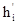 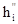
Kswi - коэффициент, зависящий от суммарного вертикального напряжения szt на глубине рассматриваемого слоя набухающего грунта; согласно СНиП 2.02.01-83 при szt = 50 кПа; Kswi = 0,8; при szt = 300 кПа; Kswi = 0,6; промежуточные значения коэффициента Kswi определяются линейной интерполяцией.
2.12. Относительное набухание грунта eswi в условиях неполного водонасыщения следует определять по формуле
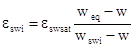
где w, weq, wswi - см. рекомендуемое приложение 4.
2.13. Суммарное вертикальное напряжение szt на глубине от подошвы сооружения должно определяться по СНиП 2.02.01-83.
2.14.
Осадку поверхности грунта 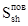 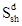
2.15. Относительная усадка грунта при неполном увлажнении должна определяться по формуле
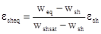
где wsh - влажность на пределе усадки;
wshsat - наибольшая возможная влажность усадки, отвечающая заданному напряженному состоянию.
2.16. Нижнюю границу зоны усадки Hsh следует принимать по таблице 3.
Таблица 3
|
Hsh ,м |
|
|
Слабонабухающие |
3 |
|
Средненабухающие |
4,5 |
|
Сильнонабухающие |
6 |
2.17. Расчет остаточного подъема следует выполнять по формуле
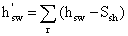
где r - количество циклов увлажнения-высыхания набухающего грунта за период, для которого определяется .
2.18. Предельные деформации оснований сооружений должны приниматься по обязательному приложению 3.
3. Проектирование оснований и сооружений оросительных систем
3.1. Если расчетная деформация набухающего основания не превышает предельных значений (обязательное приложение 3), сооружения должны возводиться на естественных основаниях. В противном случае необходимо устройство искусственного основания путем замены набухающего грунта ненабухающим на глубину, при которой деформации основания будут не более предельных, или применять мероприятия согласно п.п. 1.7 , 1.8, 1.9 или заглублять фундаменты сооружений на глубину более Hsw.
3.2. Для уменьшения касательных сил набухания следует, как правило, предусматривать наклон вертикальных гребней в сторону от обратной засыпки на 5-10° и нанесения на них покрытий, уменьшающих коэффициент трения грунта по их поверхности.
3.3. Глубина канала, проходящего в набухающих грунтах, с целью обеспечения его пропускной способности и требуемых уровней воды следует назначать с учетом возможных подъемов дна и откосов.
3.4. При проектировании каналов на косогорах поперечное сечение канала, проходящего в набухающих грунтах, следует принимать в выемке так, чтобы расстояние от уреза воды в канале до естественной поверхности откоса на уровне, соответствующем пропуску расчетного расхода, было не менее трех глубин воды в канале.
3.5. При креплении откосов каналов в набухающих грунтах в зоне колебания уровня воды и волнового воздействия, следует, как правило, предусматривать гибкие крепления. Деформационные швы должны сохранять водонепроницаемость при относительном смещении стыкуемых элементов до 1 см.
3.6. Лотковую оросительную сеть надлежит проектировать на свайных или сточных опорах. Свайные опоры принимаются забивными железобетонными с глубиной забивки не менее 2,5 м. Под стоечные опоры необходимо предусматривать ненабухающие грунтовые подушки согласно п. 3.1. Необходимо предусматривать вдоль трасс лотков и трубопроводов планировку, исключающую возможность скопления воды.
3.7. Для стыковых соединений лотков следует применять усиленную герметизацию (например, пороизоловые прокладки с заполнением полости шва мастиками типа тиоколовых), с учетом поворота смежных звеньев лотка на угол до 2°.
3.8. Трубчатую оросительную сеть на набухающих грунтах следует проектировать согласно СНиП 2.06.03-85 с учетом предельных деформаций согласно обязательному приложению 3.
Необходимо предусматривать гибкое соединение звеньев труб с сохранением плотности соединений при повороте смежных звеньев на угол до 3°. Зачеканка стыков цементным раствором не допускается.
3.9. При проектировании и строительстве гидросооружений на набухающих грунтах необходимо выполнять следующие условия:
- сооружение должно состоять из пространственно-жестких секций докового (коробчатого) или трубчатого типа;
- каждая секция должна представлять самостоятельную конструкцию (аванкамера, оголовок, труба, слив и т.п.);
- секции сооружений или их отдельных элементов могут выполняться монолитными, сборными или сборно-монолитными. Применяемые сборные элементы должны представлять готовую пространственно-жесткую секцию или иметь конструкцию, обеспечивающую после монтажа получение такой секции;
- как правило, следует применять трубчатые сооружения или открытые прямоугольного типа с вертикальными стенками с учетом п. 3.2.
- конструкция каждой секции должна быть рассчитана на деформации и прочность (а при необходимости - на трещиностойкость) при самых неблагоприятных условиях опирания на основание и воздействиях от обратной засыпки, с учетом неравномерных деформаций и дополнительных боковых давлений набухания;
- швы между отдельными жесткими секциями должны обеспечивать герметичность конструкции при взаимных смещениях соседних секций. Количество швов должно быть минимальным;
- затворы и шандоры должны располагаться в жестких металлических рамках.
3.10. Для каналов, проходящих в полувыемке-полунасыпи, удельный вес сухого грунта насыпи необходимо назначать не менее 0,93 от наибольшего удельного веса сухого грунта при стандартном уплотнении согласно ГОСТ 25100-82.
3.11. При проектировании плотин и дамб должны соблюдаться требования СНиП 2.06.05-84. При использовании набухающих грунтов в теле плотин и дамб следует предусматривать их отсыпку в зонах, где будет исключено их усадочное или морозное растрескивание. Не допускается применение набухающих грунтов в верхней части плотин, в зоне сезонного промерзания, определяемой с коэффициентом 1,3, если отметка форсированного подпертого уровня воды выше границы промерзания.
3.12. При использовании набухающих грунтов в ядрах или экранах плотин, а также в понурах выше наименьшего уровня воды, следует предусматривать защитный слой ненабухающего грунта не менее расчетной глубины промерзания и во всех случаях не менее 1,5 м.
3.13. При расчете устойчивости откосов плотин следует использовать сдвиговые характеристики грунтов с учетом их изменения при набухании и усадке грунта.
3.14. Крепление низовых откосов насыпей следует предусматривать, как правило, посевом многолетних трав по слою растительного грунта, или гравийно-галечниковым грунтом слоем не менее 0,3 м.
3.15. Дренажные устройства дамб и плотин следует предусматривать в соответствии со СНиП 2.06.05-84.
3.16. При расчете устойчивости и прочности подпорных стенок и доковых конструкций следует учитывать возможность усадки набухающего грунта засыпки и соответствующего уменьшения бокового давления со стороны тыловой грани. Для предотвращения фильтрации следует предусматривать диафрагмы, прорезающие зону усадочных деформаций.
3.17. При расчете активного и пассивного давления грунта на сооружения необходимо учитывать дополнительное горизонтальное давление набухающего грунта.
3.18. Превышение гребня плотин и дамб над форсированным уровнем воды следует принимать в соответствии со СНиП 2.06.05-84, но не менее глубины сезонного промерзания с коэффициентом 1,3.
3.19. После проведения предварительного замачивания продолжительность строительно-монтажных работ не должна, как правило, превышать период, за который осадка поверхности вследствие подсыхания грунта основания будет больше предельной деформации, для данного сооружения (облицовка сооружения на каналах).
3.20. Для контроля за деформациями сооружений на набухающих грунтах следует предусматривать нивелирование по фиксированным маркам от неподвижного репера.
Директор Союзгипроводхоза
Минводхоза СССР Н.С. Гришенко
Руководитель темы,
ответственный исполнитель С.С. Савватеев
ПРИЛОЖЕНИЕ
1
Справочное
ТЕРМИНЫ И ОБОЗНАЧЕНИЯ
1. Основными показателями, характеризующими набухание и усадку грунтов, являются:
а) относительное свободное набухание esw - относительное набухание грунта, при нагрузке, равной нулю, при возможности неограниченного поглощения воды, при невозможности бокового расширения; определяется согласно ГОСТ 24143-80;
б) влажность набухания wsw - влажность грунта после его полного свободного набухания;
в) относительное давление набухания Psw - вертикальное давление на грунт, при котором он не изменяется в объеме при возможности свободного впитывания воды;
г) набухание под нагрузкой eswp - относительное набухание грунта под расчетной вертикальной нагрузкой Р.
д) горизонтальное давление при набухании Pseq - давление на вертикальные жесткие ограждения, развиваемое грунтом при набухании;
е) относительная усадка Ssh грунта при его высыхании в долях единицы.
ОСНОВНЫЕ ОБОЗНАЧЕНИЯ КОЭФФИЦИЕНТЫ НАДЕЖНОСТИ
gf - по нагрузке
gg - по грунту
gc - коэффициент условий работы
ХАРАКТЕРИСТИКИ ГРУНТОВ
g - удельный вес
gd - удельный вес сухого грунта
gs - удельный вес частиц грунта
gw - удельный вес воды
w - влажность грунта природная
wc - влажность на границе текучести
weq - конечная (установившаяся) влажность
wsat - влажность, соответствующая полному водонасыщению
wsw - влажность набухания
wsh - влажность на пределе усадки
Psw - давление набухания
esh - относительная линейная усадка
esw - относительное набухание
wммв - максимальная молекулярная влажность
НАГРУЗКИ, НАПРЯЖЕНИЯ
F - сила, расчетное значение силы
N - сила, нормальная к подошве фундамента
G - собственный вес сооружения
sz - вертикальное нормальное напряжение полное
ДЕФОРМАЦИИ
S - расчетная деформация основания
Sи - предельная деформация основания
hsw - подъем основания при набухании грунта
Ssh - осадка основания в результате высыхания набухшего грунта
ГЕОМЕТРИЧЕСКИЕ ХАРАКТЕРИСТИКИ
Hsh - толщина зоны набухания
d - глубина заложения сооружения
A - площадь подошвы сооружения
Приложение
2
Обязательное
Состав дополнительных лабораторных исследований набухающих грунтов
Таблица 1
|
№№ пп |
Определяемые свойства |
Использование грунтов |
|||
|
основания и среда бетонных сооружений |
основания земляных сооружений |
дна и откосов каналов |
в плотинах, дамбах, понурах и обратных засыпках |
||
|
1 |
2 |
3 |
4 |
5 |
6 |
|
1 |
Относительное свободное набухание |
+ |
+ |
+ |
+ |
|
2 |
Влажность набухания |
+ |
+ |
+ |
+ |
|
3 |
Давление набухания |
+ |
+ |
- |
- |
|
4 |
Набухание и плотность грунта под нагрузкой |
+ |
+ |
+ |
+ |
|
5 |
Относительная усадка |
+ |
+ |
+ |
+ |
|
6 |
Влажность предела усадки |
+ |
+ |
+ |
+ |
|
7 |
Горизонтальное давление набухания |
+ |
- |
+ |
- |
|
8 |
Оптимальная влажность и наибольшая плотность |
- |
- |
- |
+ |
|
9 |
Сжимаемость |
+ |
+ |
- |
- |
|
10 |
Сопротивление сдвигу |
+ |
+ |
+ |
+ |
Примечание: В таблице не отражены производные характеристики, определяемые расчетом.
ПРИЛОЖЕНИЕ
3
Обязательное
Предельные деформации набухающих оснований сооружений мелиоративных систем
|
Тип и характеристика сооружений |
Предельная общая деформация основания (набухание, усадка), см |
|
1 |
2 |
|
Насосные станции на оросительной сети: |
|
|
блочного и камерного типов |
10 |
|
водопроводного типа |
15 |
|
дюкеры, акведуки, мосты |
15 |
|
Перегораживающие сооружения, вододелители, водовыпуски, сопрягающие сбросы, перепады, быстротоки, переезды и другие сетевые сооружения обычной конструкции |
15 |
|
Каналы в железобетонных лотках |
5 |
|
Трубопроводы закрытых сетей орошения: |
|
|
асбестоцементные, железобетонные |
15 |
|
стальные, из полимерных материалов |
30 |
|
Каналы в земляном русле: |
|
|
с облицовкой монолитным бетоном, железобетоном или сборными железобетонными плитами |
10 |
|
с облицовкой асфальтобетоном |
18 |
|
с облицовкой рулонными материалами или экраном из полимерной пленки с защитным покрытием |
30 |
|
Земляные сооружения |
25 |
ПРИЛОЖЕНИЕ
4
Рекомендуемое
ПОРЯДОК РАСЧЕТА ФИЛЬТРАЦИОННОГО УВЛАЖНЕНИЯ И ГРАНИЦЫ ЗОНЫ НАБУХАНИЯ ГРУНТОВ
1. Нижнюю границу зоны набухания Hsw для однородной толщи набухающего грунта при удовлетворительном оттоке фильтрационных вод следует определять совместным (как правило, графическим) решением уравнений, описывающих изменение влажности набухания wsw на глубине, и распределение конечной влажности weq по глубине.
2.
Распределение конечной (установившейся) влажности 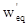
3. Глубину промачивания грунта zw следует определять по формуле
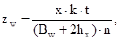
где x - смоченный периметр источника фильтрации (канала, котлована), м;
t - продолжительность увлажнения грунта (подачи воды по каналу, стояния воды в котловане ), сут;
Bw - ширина источника инфильтрации (канала, котлована), м;
hx - максимальная высота капиллярного поднятия в грунте, м;
n - пористость грунта;
k - коэффициент фильтрации, м/сут.
4. Распределение влажности в пределах капиллярной каймы определяется по формуле
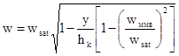
где wy - влажность на глубине y от уровня zw - hx
wммв - максимальная молекулярная влажность
5. Время промачивания слоистой толщи следует определять по формуле
t = t1 + t2 + t3 +…+ ti; (3)
где t - общее время промачивания;
t1, t2, ti - время промачивания отдельных слоев грунта, определяемое для каждого слоя учетом его фильтрационных свойств;
СОДЕРЖАНИЕ